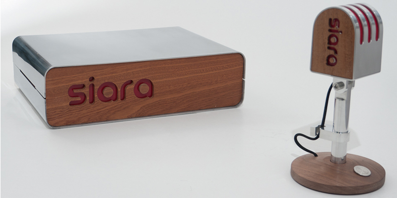

SIARA was created out of a desire to find and appreciate silence, the source of peace and feelings of well-being in people and an increasingly rare commodity in the western world. We have become accustomed to the constant drone and crash of undesirable noise that affects our mental and physiological condition SIARA allows the user to take the sound of a place they love and broadcast it to their computer, iphone or hi-fi system anywhere in the world. It has been crafted in a form that allows a normal, non-technically inclined user to connect to a familiar auditory experience with one button press. Tune into a familiar sound from an unfamiliar place.
Crafted from Walnut and Aluminum.